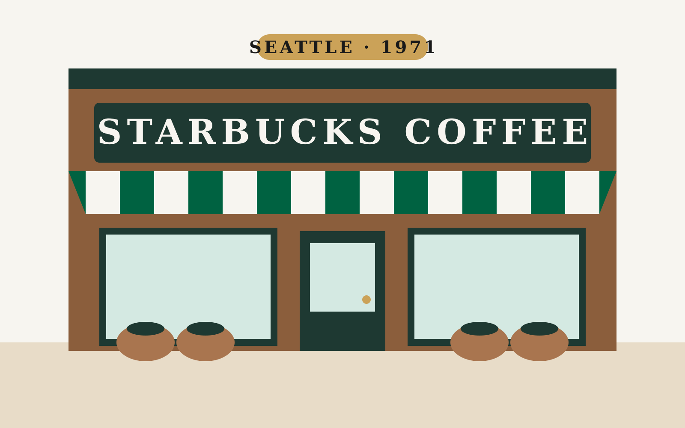
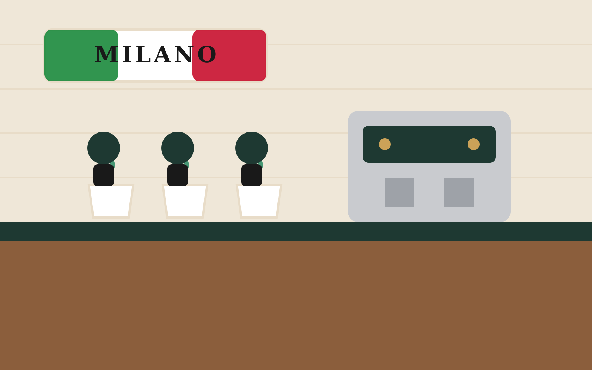
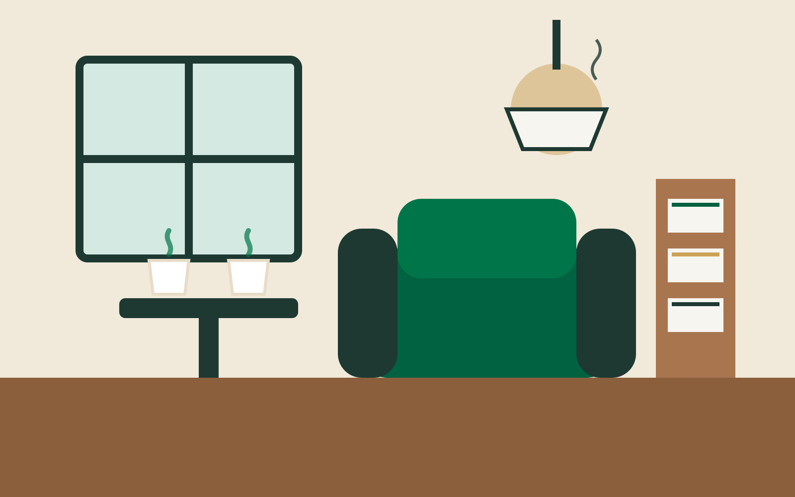
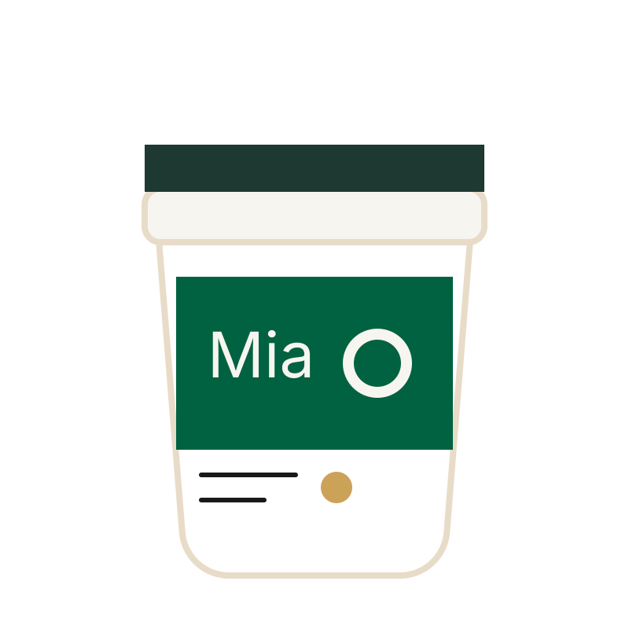
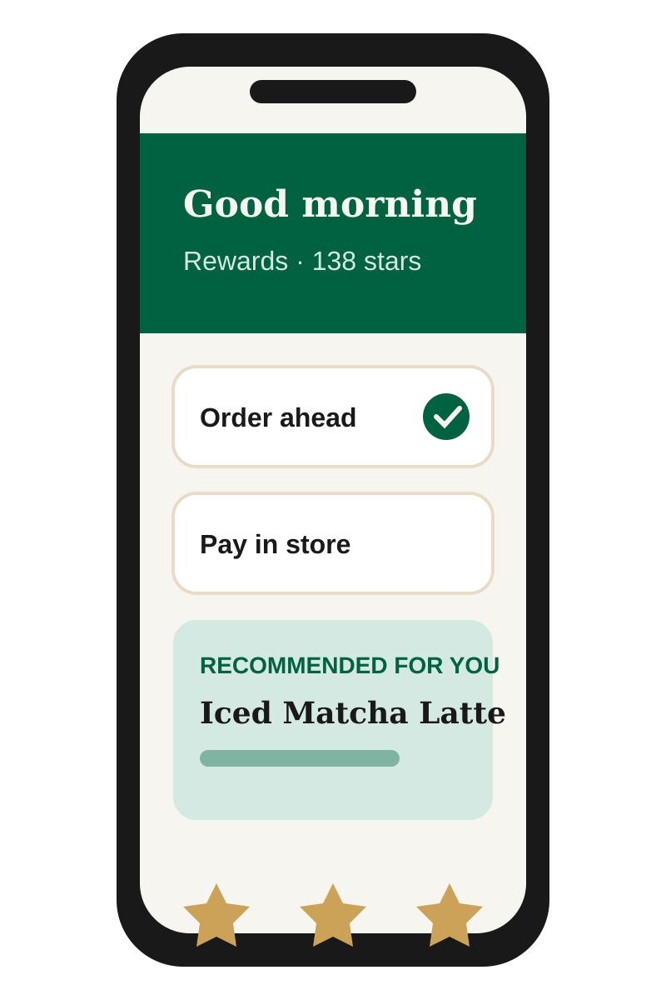
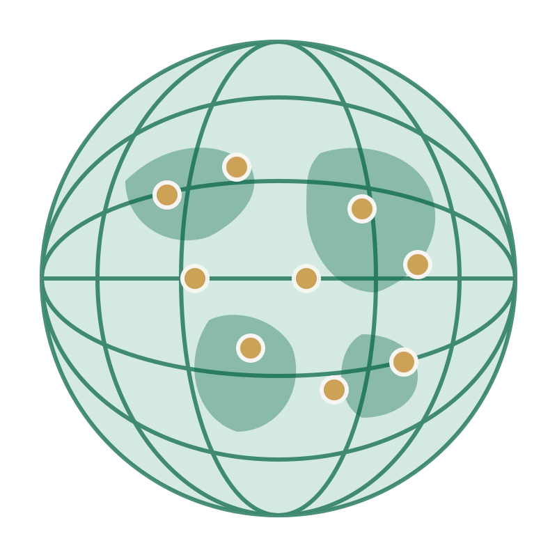

Origins · 1971
1 Speaker 1 · Introduction
MBA Business Class · Group of 4
Crafting a Global Culture: The Starbucks Storytelling Masterclass
How Narrative, Experience, and Identity Built a Multi-Billion Dollar Empire
☕
The Product
Whole-Bean Gourmet Coffee
🧜♀️
The Symbol
The Norse Twin-Tailed Siren
Next Now, let's look at where it all began in 1971…
1 Speaker 1 · Brand Origin
Chapter 1: Coffee Beans & Seattle Roots
Before the Lattes: A High-End Bean & Spice Retailer

The Founders & Mission
Founded by
- Jerry Baldwin
- Zev Siegl
- Gordon Bowker
Mission
Teach Americans how to brew fine dark-roast coffee at home.
The Siren Mythos
Inspired by
A 16th-century Norse woodcut siren
What it symbolized
- Seattle's nautical tradition
- The irresistible pull of fine coffee
2 Speaker 2 · The Turning Point
Chapter 2: The Italian Inspiration
How a Trip to Milan Changed Coffee History

-
1983
The Discovery
Howard Schultz visits Milan's espresso bars. He notices they aren't just selling drinks: they serve as vibrant community living rooms.
-
The Idea
The Vision
America needs an authentic espresso culture built around human connection, speed, and craftsmanship.
-
1987
The Acquisition
Schultz buys Starbucks for $3.8M, merging his Il Giornale cafe concept into it to launch the modern coffeehouse era.
Next Schultz didn't just want to sell coffee; he wanted to create a new space in human life…
2 Speaker 2 · Strategic Positioning
➔
➔
Chapter 3: "The Third Place" Framework
The Core Brand Philosophy

1st Place
Home
2nd Place
Work
3rd Place
Starbucks
Pillar 1 · The Third Place
A comforting, pressure-free sanctuary between home and work.
Pillar 2 · Emotional Connection
“We aren't in the coffee business serving people; we're in the people business serving coffee.”
Howard Schultz
Pillar 3 · Atmosphere as a Product
- Warm lighting
- Wooden textures
- Acoustic music
- Welcoming aroma
3 Speaker 3 · Customer Experience
Chapter 4: Storytelling Through Touchpoints
Turning Everyday Rituals into Brand Loyalty

Touchpoint 1
Personalization & Connection
Customer names on cups, eye-contact barista service, and customizable handcrafted beverages.
Touchpoint 2
Sensory Consistency
Consistent ambient design, signature scents, and curated music playlists across global stores.
Touchpoint 3
Community Customization
Store architecture that reflects neighborhood heritage while keeping core brand values.
Next As customer lifestyles changed, Starbucks had to bring "The Third Place" into the digital age…
3 Speaker 3 · Digital Ecosystem
A
B
C
D
Chapter 5: The Digital "Third Place"
Blending Physical Hospitality with Digital Convenience

Starbucks Rewards App
Gamified loyalty program driving over 30M active members.
Mobile Order & Pay
Seamless, friction-free customer convenience.
Digital Personalization
AI-driven recommendation engine tailoring offers to individual tastes.
Modern Omnichannel
Human connection preserved through drive-thru and delivery channels.
4 Speaker 4 · Global Impact
Chapter 6: Global Reach & Scale
Expanding the Narrative Across Borders

38,000+
Stores worldwide
80+
Global markets
Key growth strategy
-
Strategic joint ventures
Local partners to enter and grow in new markets.
-
Market customization
Local menus, for example Teavana and matcha drinks in Asia.
-
Reserve Roasteries
High-end flagships that act as the brand's storytellers.
4 Speaker 4 · Conclusion & MBA Takeaways
“
Key Business Lessons & Summary
What Business Leaders Can Learn from Starbucks
Lesson 1
Product vs. Experience
Products can be commoditized; brand experience builds competitive moats.
Lesson 2
Authenticity & Consistency
Core brand values must stay consistent, even during rapid global expansion.
Lesson 3
Strategic Adaptability
Merge the physical third-place atmosphere with a cutting-edge digital ecosystem.
In a world that is increasingly digital and isolated, the hunger for authentic human connection has never been greater.
Thank you! We welcome any questions from the class.